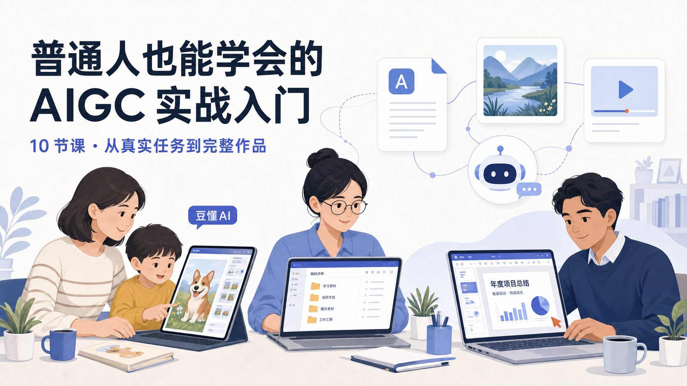

课程目录 · 10 节核心讲义

01AI 到底能为普通人做什么
从三个真实成果出发，建立对 AI 能力边界的正确预期——不是陪聊，是把想法做出来。
02什么是大语言模型 LLM
用超级学霸类比讲清 LLM，建立 Token、训练、能力边界三件事的直觉。
03什么是提示词 Prompt
把模糊想法说清楚——背景、目标、对象、要求、输出五要素法。
04LLM 和 Agent 有什么区别
顾问与助理之分：为什么有的 AI 只能说，有的 AI 却能做。
05什么是 Skill 和 API
Skill 是技能包，API 是插座——AI 怎样获得专业能力并连接外部服务。
06Agent 为什么能操作文件和软件
拆穿 Agent 的神通广大：背后是工具、权限与安全边界。
07不同人群怎样使用 Agent
家长、老师、办公人员三类场景，同一套 Agent 思维怎么落地。
08从文字到图片和视频的生成工作流
一条完整多模态工作流：Prompt → 图片 → 视频的节点串联。
09从口播稿到数字人和交互网页
把口播稿变成数字人和可点击的互动网页，串联起整条产出链。
10AI 趋势、学习路径和后续课程
为什么现在值得学，普通人怎么继续学，以及下一步的进阶路径。
附录 · 合规与产业专题
政府/企业 AIGC 普及推广的权威背书层——法规、安全、国产化、行业实证。
A
AIGC 合规与法规
生成式 AI 服务管理暂行办法、数据安全法、个保法、深度合成管理规定——红线在哪。
BAIGC 安全与风险
数据泄露、幻觉、prompt 注入、深度合成滥用——真实案例与防范清单。
C国产化与自主可控
文心/通义/智谱/DeepSeek/Kimi/豆包/星火——国产大模型概览与选型建议。
D行业落地实证
政务、教育、医疗、制造、金融——AIGC 在真实行业的落地案例。
需要完整印刷版？
74 页 A4 PDF 宣传册，含封面、版权页、目录、全部讲义与附录，适合政企培训现场分发。
下载 PDF 宣传册 →